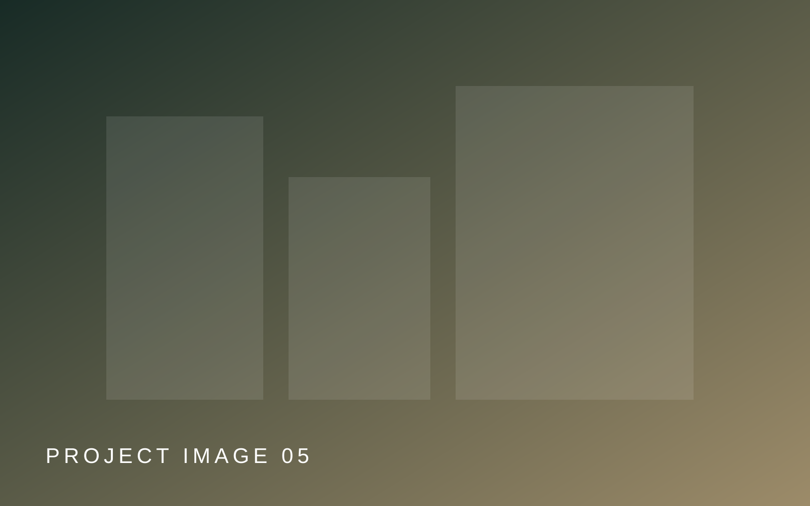
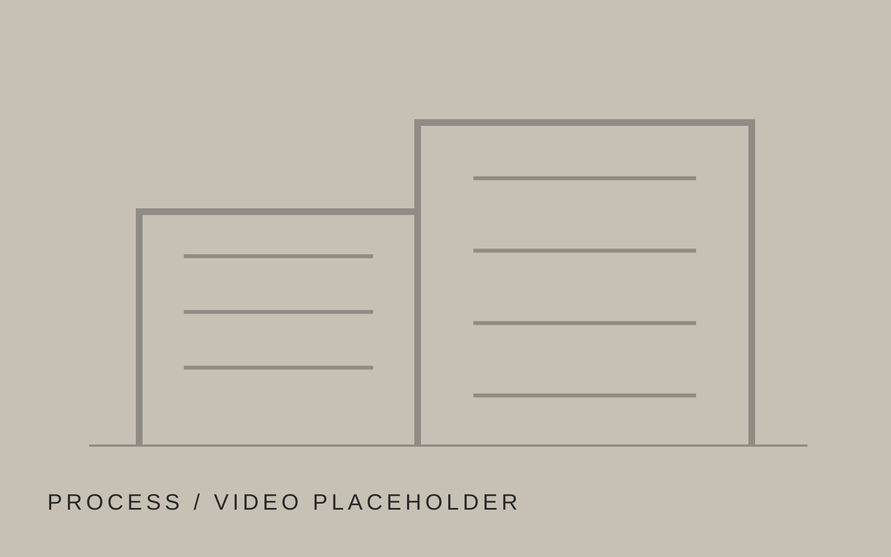

Շինարարություն
Բնակելի, հասարակական և արտադրական օբյեկտներ։
Learn more ↗Բնակելի, հասարակական և արտադրական նախագծերի իրականացում՝ փորձառու թիմով և վերահսկելի գործընթացով։
Premium corporate տարբերակը հավասարակշռում է հեղինակությունը, ծառայությունները և portfolio-ն։ Վերջնական կայքում այս հատվածը պետք է ունենա կարճ փաստացի պատմություն, իրավական/լիցենզիոն տվյալներ և հաստատված ցուցանիշներ։
Տեսնել հնարավորությունները →
REAL PROJECT PHOTOԲնակելի, հասարակական և արտադրական օբյեկտներ։
Learn more ↗Գոյություն ունեցող տարածքների և օբյեկտների վերափոխում։
Learn more ↗Ներքին և ավարտական աշխատանքների կազմակերպում։
Learn more ↗Էլեկտրական, սանտեխնիկական և տեխնիկական աշխատանքներ։
Learn more ↗Փոխարինիր demo պատկերները ընկերության ընտրած 6–8 ամենաուժեղ օբյեկտներով։

Առաջադրանք, օբյեկտ, պահանջներ և ակնկալվող արդյունք։
Ծավալ, հերթականություն, ռեսուրսներ և իրականացման պլան։
Աշխատանքների իրականացում և ընթացքի փաստագրում։
Վերջնական ստուգում, համաձայնեցում և պատրաստ օբյեկտ։
«Demo կարծիք. վերջնական տարբերակում փոխարինել իրական հաճախորդի հաստատված տեքստով»։
«Երկրորդ իրական կարծիքը կարող է ընդգծել կազմակերպվածությունը, կապը և վերջնական արդյունքը»։